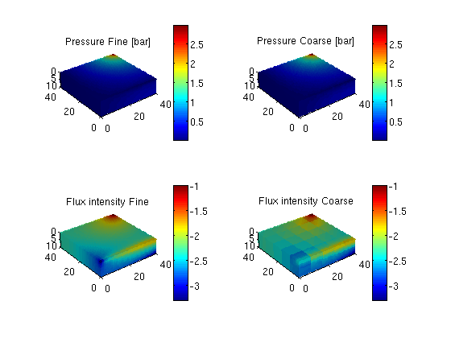

Contents
require coarsegrid
cellDims = [40, 40, 10];
verbose = true;
gravity off;
G = cartGrid(cellDims, cellDims);
G = computeGeometry(G);
rock.perm = repmat(100*milli*darcy, [G.cells.num, 1]);
rock.poro = repmat(0.3 , [G.cells.num, 1]);
W = struct([]);
W = verticalWell(W, G, rock, 40, 40, 1:10, ...
'Type', 'rate', 'Val', 1*meter^3/day, ...
'Radius', .1, 'Name', 'I');
W = addWell(W, G, rock, 1:40, 'Type','bhp', ...
'Val', 0, 'Radius', .1, 'Dir', 'x', 'Name', 'P');
fluid = initSimpleFluid('mu' , [ 1, 10]*centi*poise , ...
'rho', [1000, 700]*kilogram/meter^3, ...
'n' , [ 2, 2]);
xrRef = initResSol(G, 0.0);
p = partitionUI(G, [5, 5, 2]);
p = processPartition (G, p, 'Verbose', verbose);
CG = generateCoarseGrid(G, p, 'Verbose', verbose);
S = computeMimeticIP(G, rock, 'Verbose', verbose);
bc = pside([], G, 'LEFT', 0);
CS = generateCoarseSystem(G, rock, S, CG, ones([G.cells.num, 1]), ...
'Verbose', verbose, 'bc', bc);
W = generateCoarseWellSystem(G, S, CG, CS, ones([G.cells.num, 1]), rock, W);
xRef = initState(G, W, 0);
xMs = initState(G, W, 0);
xRef = solveIncompFlow (xRef, G, S, fluid, 'bc', bc, 'wells', W);
xMs = solveIncompFlowMS(xMs, G, CG, p, S, CS, fluid, 'wells', W, ...
'bc', bc);
Elapsed time is 0.186856 seconds.
Using inner product: 'ip_simple'.
Computing cell inner products ... Elapsed time is 1.363368 seconds.
Assembling global inner product matrix ... Elapsed time is 0.014445 seconds.
Computing flux and pressure basis functions... Elapsed time is 1.240920 seconds.
plot output
f = figure;
cellNo = rldecode(1 : G.cells.num, diff(G.cells.facePos), 2) .';
plot_var = @(x) plotCellData(G, x);
plot_pres = @(x) plot_var(convertTo(x.pressure(1:G.cells.num), barsa));
plot_flux = @(x) plot_var(log10(accumarray(cellNo, ...
abs(convertTo(faceFlux2cellFlux(G, x.flux), meter^3/day)))));
subplot(2,2,1)
plot_pres(xRef); title('Pressure Fine [bar]')
view(3), camproj perspective, axis tight equal, camlight headlight
cax = caxis; colorbar
subplot(2,2,2)
plot_pres(xMs); title('Pressure Coarse [bar]')
view(3), camproj perspective, axis tight equal, camlight headlight
caxis(cax);
colorbar
subplot(2,2,3)
plot_flux(xRef); title('Flux intensity Fine')
view(3), camproj perspective, axis tight equal, camlight headlight
cax2 = caxis; colorbar
subplot(2,2,4)
plot_flux(xMs); title('Flux intensity Coarse')
view(3), camproj perspective, axis tight equal, camlight headlight
caxis(cax2); colorbar
